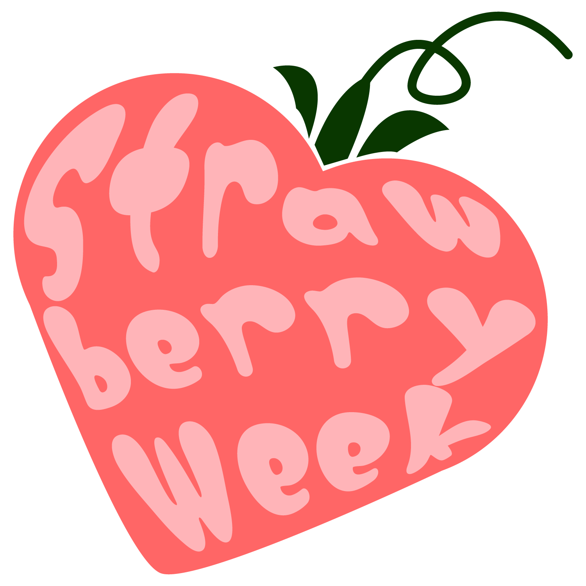

お知らせ
Information
- 0000.00.00サンプル公開しました。
- 0000.00.00サンプル公開しました。
- 0000.00.00サンプル公開しました。
メッセージ
Message
教科書
Text book
生理について知ってみましょう
生理について知ることができます。
そもそも女性の身体のしくみや、どうして生理がくるのかなど『生理の基本』を知ることで、生理の悩みはもちろん、身体の悩みも解決に繋がるかもしれません。
また、知ることで、あなた自身の生理に対して異常なポイントを見つけることで、万が一にでも病気がかくれていた場合、早期発見、早期治療にも繋がります。
自身の身体に寄り添うために、まずは『知る』ことからはじめてみませんか？
MY教科書
My Text book
信頼している人に自分の生理を
知ってもらいましょう
生理の悩みを打ち明けたことありますか？
生理に関する悩みや考えを打ち明けるには、勇気や相手とのそれなりの関係性が必要になります。お医者さんに打ち明けることも、そもそも婦人科に行くことすらも、とても勇気が必要です。
世間的に少しずつ女性の活躍する場が増え、少しずつ生理に対しての考え方も変わっているのは確かです。それでも『生理について声にする』ことはとても不安だと思います。
少しずつ変わっている世間を、身近にいる信頼できる人を、あなたも少しだけ勇気を出して、信じて、頼ってみませんか？
まずは『あなたの生理』を知ってもらうところからはじめてみませんか？
ラウンジ
Lounge
生理のいろいろを知ってみましょう
身体の基本的なしくみはだいたい同じですが、生理中の症状や悩みはひとそれぞれ違います。1人1個以上の症状や悩みがあります。しかも毎回出血量や生理痛の重さや症状も違うこともあります。それは季節や気温、その生理前の精神状態や運動量、生活習慣によっても左右されてしまいます。
ラウンジでは、悩みを1個ずつ解決できるように、生理期間中を少しでも快適に過ごせるように、生理にまつわる情報を掲載しています。少しだけでも見てみませんか？